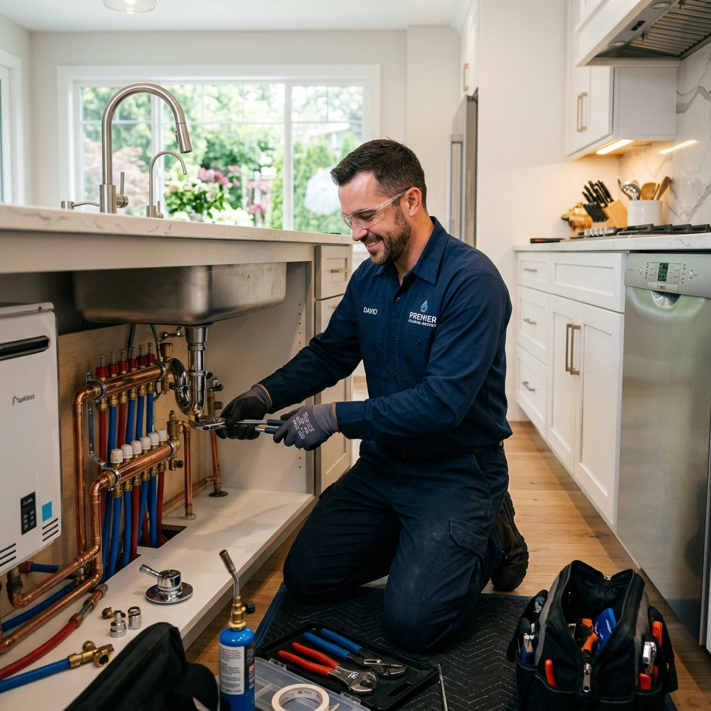
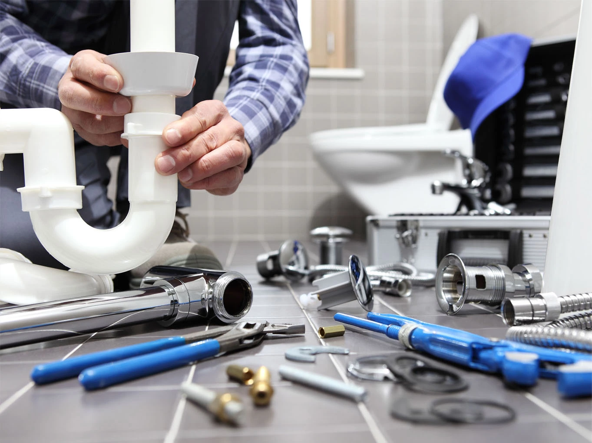
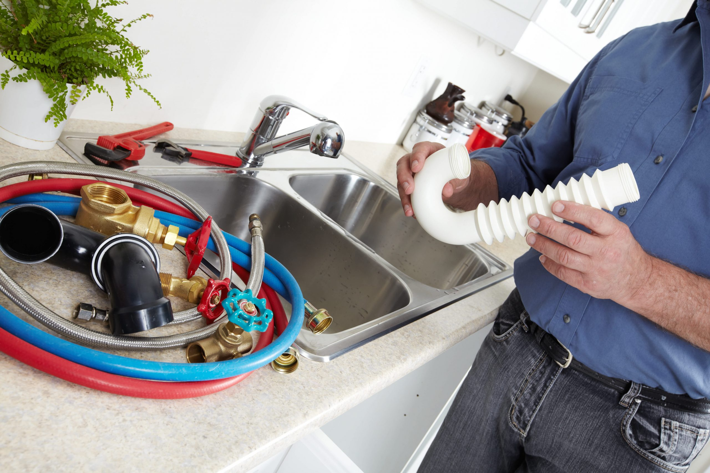
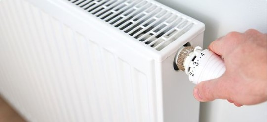
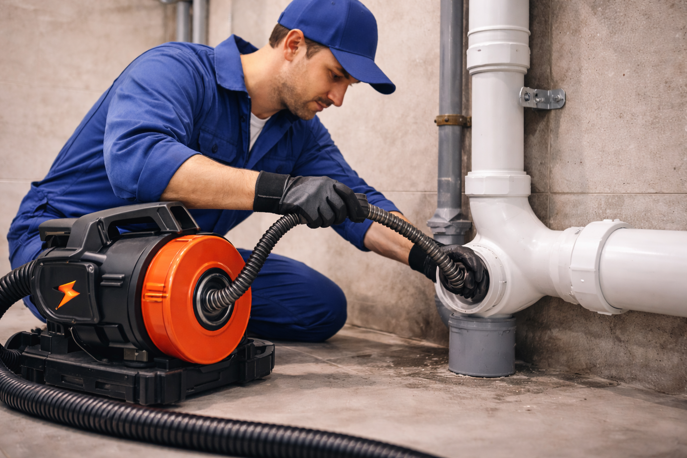
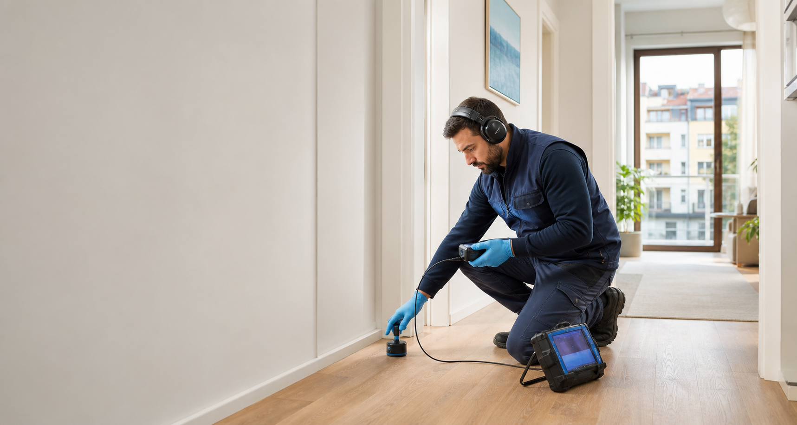
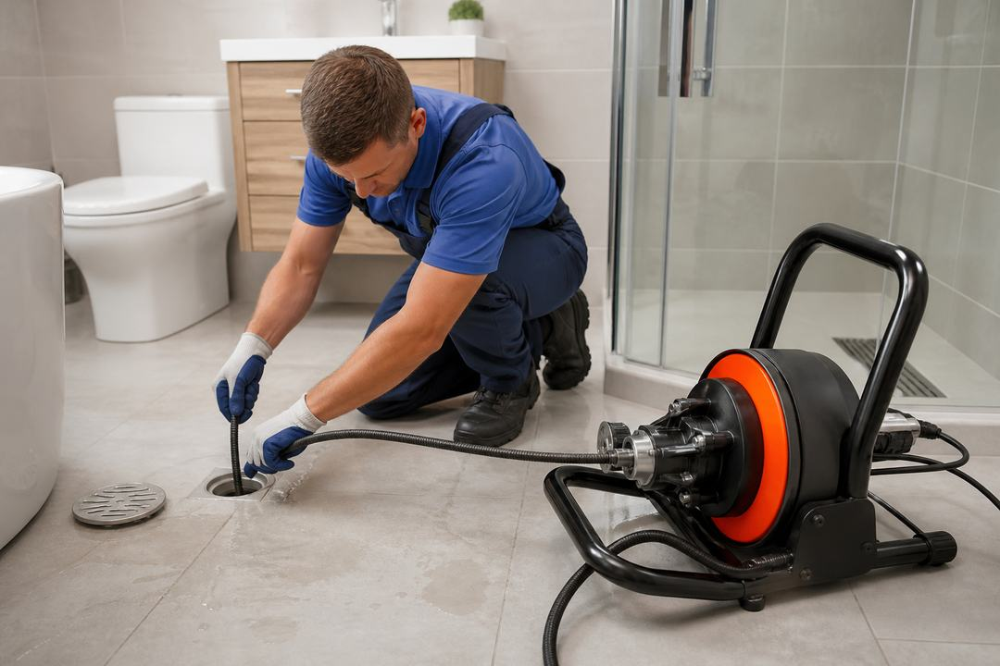
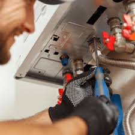

Yalcın Teknik Tesisat, uzun yıllardır sıhhi tesisat sektöründe faaliyet göstermektedir. Müşterilerimize kaliteli ve güvenilir hizmet sunma misyonuyla hareket etmekteyiz ve sektördeki deneyimimizle öne çıkmaktayız.
Müşterilerimize sunduğumuz hizmetler arasında banyo ve mutfak tesisatı kurulumu, tamiri ve bakımı, kombi bakımı ve petek temizliği, su kaçağı tespiti ve onarımı gibi geniş bir yelpaze bulunmaktadır. Ekibimiz, her türlü sıhhi tesisat sorununun üstesinden gelebilmek için sürekli eğitimden geçmektedir.
Deneyimli ve profesyonel ekibimizle İstanbul genelinde hizmet vermekteyiz. Bizi tüm sıhhi tesisat işleriniz için 7 gün 24 saat arayabilirsiniz.

Profesyonel ekibimizle tüm sıhhi tesisat montaj işlemlerinizi güvenle gerçekleştiriyoruz. Mutfak, banyo, lavabo ve klozet dahil tüm su tesisatı kurulumları.

Kombinizin uzun ömürlü olması için düzenli bakım ve petek temizliği hizmetleri. Tüm marka kombiler için servis desteği.

Lavabo, tuvalet, duş ve mutfak giderlerinizdeki tıkanıklık sorunlarını en son teknoloji ekipmanlarla çözüyoruz.

Cihazlarımızla su kaçağını kırmadan tespit ediyoruz. Duvar içi ve zemin altı su kaçaklarında uzman ekip.

Bina logar ve drenaj sistemlerinizdeki tıkanıklıkları makine ile açıyoruz. 7/24 acil müdahale.

Gece gündüz demeden 7/24 acil tesisat sorunlarınıza anında müdahale ediyoruz. İstanbul geneli hızlı servis.
30 dakika içinde yerinizde
Deneyimli profesyoneller
Sigortalı ve garantili
Şeffaf ve makul ücretler